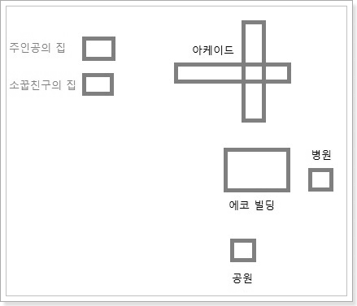
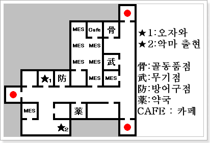
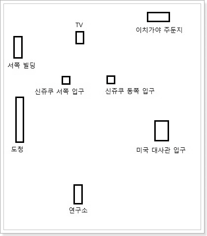
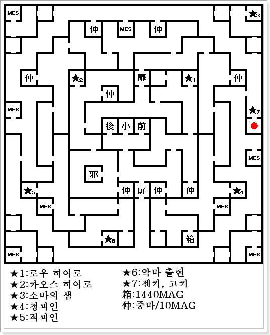

- 키치죠우지
- 주인공의 집
- 아케이드
- 주인공의 집
- 이노카시라 공원
- 병원
- 아케이드~주인공의 집
- 에코 빌딩
- 연구소
- 신쥬쿠
- 신쥬쿠 지하거리(1)
- 신쥬쿠 서쪽 빌딩
- 도청 앞 광장
- 신쥬쿠 지하 거리(2)
- 이치가야 주둔지
- 미국 대사관
- 누구에게 협력을 할까?
- 금강신계
키치죠우지

주인공의 집
게임을 시작하면 꿈속에서 주인공(더 히어로), 로우 히어로, 카오스 히어로의 이름과 능력치를 결정한다.
각자 능력치 분배에 18포인트가 주어진다.
잠에서 깬 주인공은 컴퓨터를 사용해서 악마 소환 프로그램을 다운 받는다. 다시 한번 컴퓨터를 사용하면 '악마 소환 프로그램'에 대한 설명이 나온다.
방 밖으로 나가면 주인공의 어머니에게 1만엔을 받고 아케이드의 커피숍을 갔다 오라고 부탁 받는다.
아케이드

커피숍(CAFE 내부)에서 마스터와 회화한다. 그 근처에 있는 유리코와 회화한다.
약국 뒤에서 '유귀 가키'와 만난다. 주인공을 때리고 도망쳐버린다.(데미지 5)
악마가 있던 자리에서 '어택 나이프(검)'를 줍는다.
서바이벌숍(방어구점)에서 방어구 전부 구입해서 주인공에게 착용하자.
주인공의 집
주인공의 방에서 잠을 자면 꿈속으로 간다.
로우&카오스 히어로가 동료가 된다. 이후 선택지
소녀를 돕는다. → LAW
소녀를 돕지않는다. → CHAOS
히로인의 이름과 능력치를 결정한다.
잠에서 깨면 메일이 도착. 오토매핑(지도 보기) 프로그램을 받는다. 다시 컴퓨터를 사용하면 설명을 볼 수 있다.
주인공의 집을 나와 남쪽의 이노카시라 공원에 간다. 맵에 악마가 출현하기 시작한다.
이노카시라 공원
공원 입구에서 노인을 만나 꿈속(병원?)으로 간다.
로우, 카오스 히어로들과 만나고 자동으로 초인 도우만과 만난다. 전투 후 꿈에서 깬다. (1턴 강제 종료)
이후 이노카시라 공원의 관에서 '회복도장(회복/아이템 구입)'과 '사교의 관(악마 합체)'을 이용할 수 있다.
아케이드의 골동품상에서 총기 구입 가능하게 된다. 아직은 총의 구입 가격이 부담스러우니 탄만 구입해두자.
이 근처에서 출현하는 '외도 야쿠자(2)'가 총「ベレッタ92F」을 떨어뜨린다.
주인공의 집 근처의 도로에서 체포되어 병원에 감금된다. 체포되기 전에 전투를 좀 해서 무기를 얻어두면 좋다.
병원
감금된 방 뒤에 가면 로우 히어로가 동료가 된다. (주인공 뒤편)
철장 밖으로 나와 근처의 방에서 STEVEN과 만난다. STEVEN은 데빌 아날라이즈(간이 악마 사전)프로그램을 추가해준다.
병원 2F의 원장실에서
BOSS:타천사 오리아스와 전투. 첫 보스라 어렵지 않다.
오리아스를 쓰러뜨리면 1F의 오토락이 풀려서 자유롭게 출입 가능해진다. 밖으로 나가자.
아케이드~주인공의 집
아케이드의 '오자와의 아지트'에서 카오스 히어로를 동료로 한다.
아케이드 근처를 돌아다니면서 카오스 히어로의 레벨을 올려주자.
주인공, 로우, 카오스가 모두 파티에 있고, 사망 상태가 아니라면 집에서
BOSS:사귀 아마노사쿠가미와 전투를 한다.
카오스 히어로의 '아기' 마법으로 공격하면 쉽게 이길 수 이다.
쓰러뜨리면 'ID 카드' 입수를 하고 '개 파스칼'이 주인공을 따라 온다.
사교의 관에서 파스칼을 악마와 합체 시키면 '마수 케르베로스'가 된다. → CHAOS
이후 에코 빌딩에 ID 카드를 사용해서 들어가자.
에코 빌딩
2F에는
고정 악마 출현 포인트가 있다.
각 층의 보상(보물 상자)에서 아이템을 회수하고, 5F의 터미널에서
BOSS:초인 도우만과 전투를 하자.
도우만은 'HP 398'에 "마하라기, 시바브, 마하잔"을 사용한다. 상대하기 어렵다면 케르베로스를 만들어서 싸우자.
도우만을 쓰러뜨리면 터미널에서 파스칼 또는 케르베로스가 전송된다.
주인공도 터미널을 사용해서 연구소로 이동하자.
연구소
연구소 2F과 1F에서 '사귀 오크'와 전투가 있다.
1F에서 STEVEN과 만날 수 있다. 선택지에서 「YES,YES,NO」순으로 선택하면 중마의 스톡 수를 +2 해준다.
연구소 밖으로 나와 북쪽의 신쥬쿠로 간다. 신쥬쿠의 입구는 서쪽과 동쪽 두 곳이 있다.
신쥬쿠

신쥬쿠 지하거리(1)
신쥬쿠 지하거리에는 가이아 신전(서), 회복도장(북서), 메시아 교회(동), 터미널(동), 사교의 관(북서), 무기점, 방어구점, 약국 같은 시설이 있다.
남동쪽의 바(BAR)에서 「J.B」라는 이름의 사람에게 레지스탕스 리더에 관한 이야기를 듣는다. (바의 입장 조건: 주인공, 로우, 카오스 히어로가 사망 상태가 아니다.)
남쪽의 바에서 유리코를 만나고 바의 바텐더와 회화한다. 선택지에서 「YES, NO, YES」 순으로 대답하면 바의 성냥(BARのマッチ)을 얻는다. 이 성냥은 통행증 역활을 한다.
메시아 교회 북쪽의 계단으로 내려가면 레지스탕스 아지트가 있다. 내부에서 히로인과 만난다. 주인공에게 협력해달라고 하는데 어느 것을 선택하든지 상관없다. 그 후 유리코가 나타나서 히로인을 납치한다.
다시 남쪽의 바에 가서 레지스탕스의 남자(유리코가 있던 장소)로부터 공개 처형 정보를 듣는다. 이제 신쥬쿠 지하거리를 나가 지상으로 가자.
신쥬쿠 서쪽 빌딩
신쥬쿠 서쪽 출입구 근처에 있는 서쪽 빌딩안에서 오자와를 만난다.
곧바로 '유귀 베이코쿠(25)'와 전투. 화염계 마법에 약하니 아기를 사용해서 재빠르게 처리하자.
여기서 출현하는 '타천사 가미진(12)'은 마카쟈마(マカジャマ) 마법을 가지고 있다. 나중에 금강신계의 보스전에서 유용하게 쓰일 악마다. 미리 중마로 만들어 놓자.
도청 앞 광장
서쪽 빌딩의 남서쪽에 있다.(GBA판에서는 큰 노란색 건물)
내부의 공개 처형장에서 출현하는 악마와 연속 전투 후, 히로인을 구출한다.
출현하는 악마는 '시귀'계 악마로 성수(聖水)같은 파마계 마법/도구가 통하니 돈이 있으면 메시아 교회 또는 회복도장에서 구입해서 쓰면 좋다. 또한 화염에도 약하다.
신쥬쿠 지하 거리(2)
남쪽의 바의 레지스탕스의 남자에게 가면 로우 히어로, 카오스 히어로가 파티에서 이탈한다. 그리고 히로인이 동료로 들어오며, 「위조 ID 카드」를 얻는다.
이제 고토우와 토르만을 한번씩 만나러 가야 된다. 만나는 순서는 상관 없지만 질문에 신중하게 답하자.
이치가야 주둔지
신쥬쿠 북동쪽에 있는 이치가야 주둔지로 이동한다. (위조 ID 카드 필요)
B1F의 감옥에 갇혀있는 여자를 한명씩 구할 때 마다 → LAW (총 3명)
여기서 출현하는 시귀 좀비아미(10)는 총 「MP5 マシンガン」을 떨어뜨린다. 이 시점에서 가장 좋은 총이니 가능하면 입수하자.
3F의 고토우와 대화한다.
미국 대사관
대사관 입구를 통해서 진입한다. (2D맵의 동쪽에 위치해 있다)
대사관 출입에는 위조 ID 카드가 필요하다.
2F에서 토르만과 대화, 고토우를 해치워달라는 부탁을 받는다.
누구에게 협력을 할까?
고토우의 부탁을 거절하거나, 토르만의 부탁을 받은 경우 고토우의 부하와 3연전. 마지막에는
BOSS:초인 고토우와 전투를 한다.
토르만의 부탁을 수락하면 고토우를 쓰러뜨리면 되고, 거절하면
BOSS:마신 토르와 전투 (고토우를 먼저 만나고 왔으면 NO, NO, YES순으로 답하면 전투)
BOSS:초인 고토우 HP440
히
로인이 가진 마법 공격은 그다지 효과가 없고, 검이나 총으로 공격을 사용해야 된다. 히로인은 회복 마법으로 주인공을 회복 시키면서 '타루카쟈'를 가진 중마로 공격력을 올려서 상대하면 좋다. 타루카쟈를 가지고 있는 악마는 미국 대사관에서 출현하는 '투귀 스파르토이(14)'를 중마로 하면 된다.
BOSS:마신 토르 HP482
고토우전과 마찬가지로 검과 타루카쟈로 상대해야 된다. 다만, 토르가 사용하는 마법 '지온가'의 위력이 강해서 중마가 잘 버티질 못한다.
속성 변화
고토우를 죽이고, 토르만에게 충성을 맹세한다. → LAW
고토우를 쓰러뜨리지 않고, 토르만을 해치운다. → CHAOS
고토우도 토르만도 해치운다.→ 변화하지 않는다. (NEUTRAL)
고토우와 전투와 관계 없이 토르만이 쓰러지면 도쿄에 ICBM이 떨어지고 금강신계로 가게 된다.
금강신계

금강신계는
고정 악마 출현 포인트가 있다. 마인이 나와도 아직은 마인과 싸우기 힘들 것이다.
금강신계에 도착하면 엔노오즈노(役小角)의 이야기를 듣고 시작하게 된다. 엔노오즈노를 기준으로 오른쪽 방은 세이브 포인트, 왼쪽 방은 회복을 해준다.
맵을 진행하면서 로우 히어로, 카오스 히어로를 다시 동료로 한다. 특정 방에 들어가면 잃어버린 중마들도 찾을 수 있다.
동료를 다 모으면 다시 엔노오즈노에게 돌아가서 회화를 하자. 엔노오즈노는 소마를 찾아달라는 부탁을 하며 남쪽의 안 열리던 문을 열 수 있게 된다.
소마의 위치는 금강신계 북동쪽에 있다. 남쪽 문을 통해 가면 된다. 총2회에 걸쳐서 소마를 갖다 주면 로우, 카오스 히어로가 파티에서 이탈한다.
이제 청괴인(青かいじん), 적괴인(赤かいじん)이 가진 무기를 찾아와야 한다. 북쪽 문을 통해서 청괴인과 적괴인을 만나러 가자.
BOSS:초인 청괴인 HP310
NEUTRAL, LAW → 청괴인을 쓰러뜨린 후 「ギロチンアクス」를 입수
CHAOS → 청괴인에게 「ギロチンアクス」를 받는다.
BOSS:초인 적괴인 HP320
NEUTRAL, CHAOS → 적괴인을 쓰러뜨린 후 「光の小太刀」를 입수
LAW → 적괴인에게 「光の小太刀」를 받는다.
이후 엔노오즈노와 대화하면 「三日月の太刀」을 받을 수 있다. 그리고 로우 히어로, 카오스 히어로가 다시 파티에 참가한다.
소마를 얻었던 장소에서 남쪽으로 내려가면 젠키와 고키를 만난다. 그리고 금강신계 마지막 전투를 하게 된다.
BOSS:투귀 젠키 HP340
전체적으로 강함. 파마가 무효
지온가, 회심, 라쿠카쟈
BOSS:투귀 고키 HP290
전체적으로 강함. 파마가 무효
메디아, 마카쟈마, 타루카쟈
공격, 회복, 버프가 골고루 갖춰진 보스이다. 강력한 보스임은 틀림없다.
이전에 중마로 만들라고 했던 타천사 가미진(12)이 있다면 마카쟈마를 사용해서 마법을 봉인하면 상대하기 편하다.
젠키와 고키를 쓰러뜨리면 대파괴 이후의 도쿄로 이동한다.